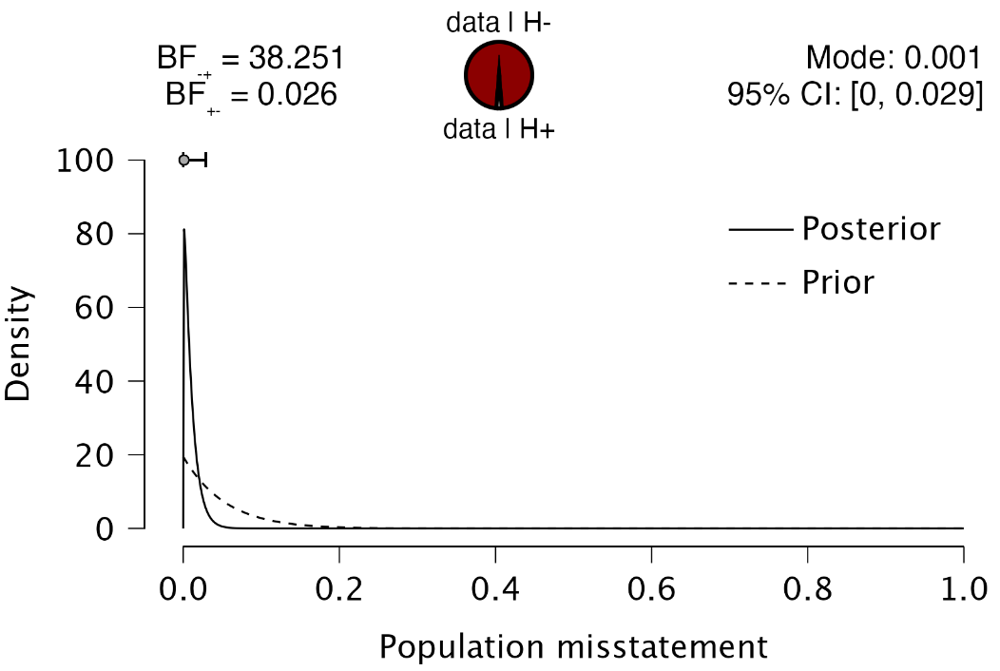

4 Evaluation
This chapter is about the ‘Evaluation’ analysis in the ‘Audit Sampling’ section of the module.
4.1 Purpose of the analysis
The purpose of the evaluation analysis is to estimate the misstatement in the population from an audited sample and, if necessary, determine if the misstatement is below the performance materiality threshold. This enables auditors to conclude, with a certain level of assurance, whether the population is free of material misstatement.
4.2 Practical example
Let’s explore an example of an evaluation analysis. To follow along, open the ‘Evaluating a Sample’ dataset from the Data Library. Navigate to the top-left menu, click ‘Open’, then ‘Data Library’, select ‘7. Audit’, and finally click on the text ‘Evaluating a Sample’ (not the green JASP-icon button).

This will open a dataset with 90 rows and three columns: ‘ID’, ‘Book.value’, ‘Audit.value’. The ‘ID’ column represents the identification number of the items in the population. The ‘Book.value’ and ‘Audit.value’ columns show the recorded and true values of the items, respectively. The sample is drawn from a population of 1,414 items. In this scenario, we seek to determine, with 95% confidence, whether the population contains no misstatements exceeding the performance materiality threshold of 3.5% of the total population value, which amounts to €4,254,246.09.

4.2.1 Main settings
To evaluate this audit sample, we open the ‘Evaluation’ analysis within the Audit module. The interface for the evaluation analysis is displayed below.

These are the main settings for the analysis:
- Variables: Begin by entering the variable that contains the identification numbers for the items into the ‘Item ID’ field. Then, input the variables that hold the book values and audit (true) values of the items into their respective fields. If your data includes an indicator for which items are part of the sample, drag this to the ‘Selection Counter’ box. Similarly, if there’s an indicator identifying the stratum to which an item belongs, drag this to the ‘Stratum’ box.
- Sampling objectives: Performance materiality: In this section, you can input the performance materiality either as a percentage (relative) or as a monetary amount (absolute). For this example, we enter the performance materiality as a relative value of 3.5%.
- Sampling objectives: Minimum precision: This objective requires that the misstatement in the population is estimated with a specified minimum uncertainty (the difference between the most likely misstatement and the upper limit for the misstatement). Since this is not relevant to our audit objective, we leave this box unchecked.
- Confidence: Specify the confidence level for your analysis. This level, which complements the significance level, dictates when to reject the null hypothesis and the amount of work needed to approve the population. A higher confidence level requires more audit evidence to conclude that the population is free of material misstatement. In this example, we use a confidence level of 95%.
- Data type: Indicate the type of data you are working with. The ‘Population’ data type assumes that the loaded data file is a full population, with selected items indicated via the ‘Selection Counter’ variable. This removes the need to manually enter the number of items and units in the population. The ‘Sample’ data type assumes that the loaded data file is a sample list and requires entering the number of items and units in the population manually. The ‘Summary statistics’ data type eliminates the need to load a data file and enter variables, assuming the data comes in the form of two values: the sample size and the number of misstatements.
- Population: No. items: Enter the number of items in the population. In this example, the population consists of 1,414 items, so we input the value 1,414 here.
- Population: No. units: Enter the total value of the population. In this example, the population has a total value of €4,254,246.09, so we input the value 4,254,246.09 here.
- Audit risk model: Input the assessed risks of material misstatement into the Audit Risk Model here. For further details on this setting, refer to Chapter 2.
- Display: Explanatory text: Finally, select whether to show explanatory text in the output.
4.2.2 Main output
The main table in the output below shows the performance materiality (and minimum precision if enabled), along with the sample size and the number of identified misstatements in the sample. The ‘Taint’ row displays the sum of the taints, which are the fractional misstatements of the items. Finally, the table presents the estimated most likely misstatement in the population, the 95% upper bound, and the associated precision (the difference between the most likely misstatement and the upper bound).

In this example, the sample consisted of 90 items, with one misstatement identified. This misstatement had a taint of 0.110. Consequently, the most likely misstatement in the population is estimated to be 0.001, or 0.1%. The 95% upper bound for this estimate is 0.035, or 3.5%, and the precision is 3.4%. This upper bound matches the performance materiality of 3.5%, indicating that the auditor has achieved at least 95% assurance that the population is free of material misstatement.
4.2.3 Report
The following settings enable you to expand the report with additional output, such as tables and figures.

Tables: Misstated items: Check this box to generate a table displaying the misstated items in the sample. In this instance, the single misstated item had a book value of €1,813.42 and an audit (true) value of €1,613.42, resulting in a misstatement of €200 and a taint of 0.110.

Tables: Corrections to population: Check this box to generate a table indicating the necessary corrections to the population to meet a specific objective. For example, to ensure the population is free of misstatements with 95% confidence, a correction of the upper limit to 3.5% of the population value is required.

Plots: Sampling objectives: Check this box to generate a figure displaying the sampling objectives, the most likely error, and the upper bound. In this case, the sole sampling objective was the performance materiality. Since the upper bound is lower than the performance materiality, it is highlighted in green.

Plots: Estimates: Check this box to generate a figure displaying the most likely misstatement along with the upper and lower limits. This figure is generally useful only if you have entered a variable in the ‘Stratum’ box, as it provides a quick visual overview of the magnitude of the misstatement in the various strata.

4.2.4 Advanced
The following advanced settings enable you to customize the statistical computations according to your preferences.

- Method: Choose the statistical method to calculate the upper limit of the misstatement. In this example, we selected the Stringer bound as the evaluation method because it considers the taints of the items, making it less conservative than the Poisson, binomial, and hypergeometric distributions. Note that the default setting is ‘Binomial’, so you must manually select the Stringer bound if you wish to use it.
- Critical items: Choose which items are excluded from the statistical evaluation and designated as critical items. Currently, the only option is to mark negative values as critical items, which are kept by default and subtracted from the most likely misstatement and upper bound.
- Confidence interval (Alt. hypothesis): Choose whether to calculate a one-sided confidence interval (upper bound or lower bound) or a two-sided confidence interval for the population misstatement. This selection determines the alternative hypothesis being tested.
4.3 Bayesian evaluation
The Audit module includes an analysis called ‘Bayesian Evaluation,’ which is the Bayesian variant of the evaluation analysis. This enhanced analysis offers additional options beyond those available in the classical evaluation analysis, emphasizing the integration of various types of pre-existing audit information.
4.3.1 Prior
These settings enable you to customize how different types of pre-existing audit information are integrated into the statistical analysis. For more details on the theory behind Bayesian evaluation and the types of prior distributions, read the corresponding section in Statistical Audit Sampling with R.

- Distribution: Select the functional form of the prior distribution. The default is the beta distribution, which is conjugate to the binomial likelihood. Other options include the gamma distribution (conjugate to the Poisson likelihood) and the beta-binomial prior distribution (conjugate to the hypergeometric likelihood).
- Elicitation: Method: Choose the type of pre-existing information to be included in the prior distribution. By default, an ‘uninformative’ prior distribution is used, which incorporates negligible information. Alternatively, the prior distribution can be based on an earlier sample, risk assessments from the Audit Risk Model, or the assumption of impartiality.
- Most likely misstatement: Indicate the mode of the prior distribution, which represents the expected most likely misstatement in the population. Keep in mind that this differs from the tolerable deviation rate in the sample. This option is necessary only when the ‘Impartial’ or ‘Risk assessments’ elicitation method is chosen.
4.3.2 Report
The following settings enable you to expand the report in the Bayesian evaluation analysis with additional output, such as tables and figures.
Tables: Prior and posterior: Check this box to generate a table displaying descriptive statistics of the prior distribution and the realized posterior distribution.

Plots: Sequential analysis: Check this box to produce a figure showing the Bayes factor as a function of the sample size.
Plots: Prior and posterior: Check this box to generate a figure displaying the prior and posterior distribution. If the box for additional information distribution is also checked, the figure will include information about the posterior distribution and the Bayes factor.

4.3.3 Advanced
The following advanced settings enable you to customize the statistical computations in the Bayesian evaluation analysis according to your preferences.
- Algorithm: Partial projection: Check this box to separate the observed misstatement from the unobserved misstatement during evaluation, projecting the uncertainty only onto the unobserved portion of the population.
- Algorithm: Share information: Check this box to apply a hierarchical model when analyzing a stratified sample. To enable this option, you must specify a variable in the ‘Stratum’ box.
- Algorithm: Hurdle model: Select this option to apply the hurdle model, an alternative evaluation method. This approach is a Bayesian alternative to the Stringer bound because it properly accounts for the partial misstatements in the items.